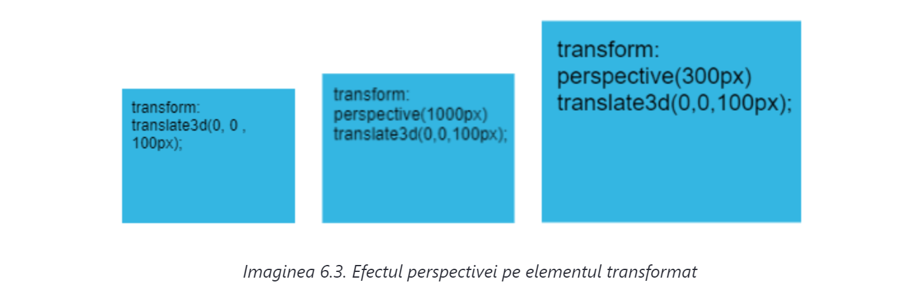
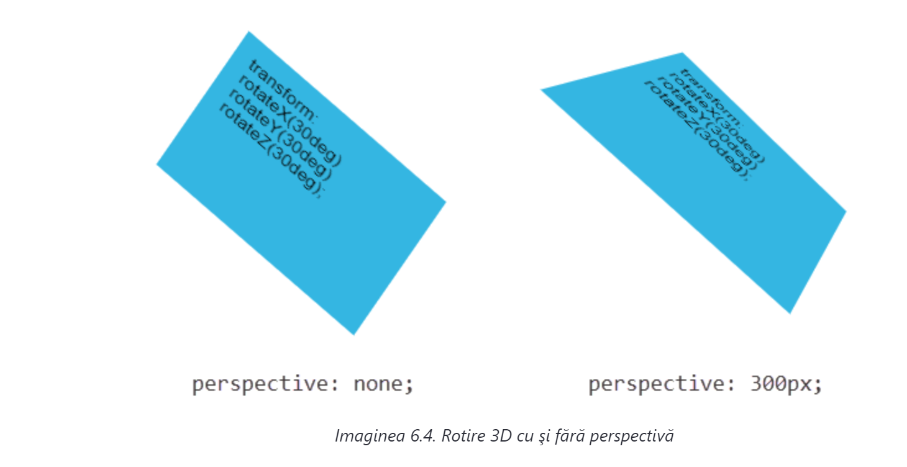

Povestea transformărilor în spaţiul tridimensional nu poate fi încheiată fără să menţionăm noţiunea de perspectivă. Perspectiva este o noţiune care se referă la cum vede un observator un obiect în spaţiu. Perspectiva este, în special, importantă pentru crearea reprezentărilor tridimensionale pe baza unui plan cu două dimensiuni. O astfel de situaţie există şi pe web, având în vedere că ecranele dispozitivelor pe care se afişează site-urile au o suprafaţă 2D.
Perspectiva ne arată cât este de îndepărtat observatorul de obiectul reprezentat în spaţiul tridimensional. Distanţa observatorului de obiect, creează în ochii acestuia o altă imagine despre obiectul respectiv. Tragem aceeași concluzie şi din viaţa reală. Obiectele care sunt mai aproape de observator i se par mai mari, iar obiectele mai îndepărtate i se par mai mici.
În CSS, perspectiva se poate defini în două moduri, şi anume:
folosind funcţia perspective()
În acest caz, perspectiva se defineşte ca parte a valorii proprietăţii transform pe un element concret. De exemplu:
transform: perspective(700px) rotateX(30deg) rotateY(30deg) rotateZ(30deg);
Atenţie, deoarece perspectiva trebuie definită înaintea celorlalte funcţii CSS pentru transformare.
folosind proprietatea perspective
Proprietatea perspective, spre deosebire de funcţiile cu aceeaşi denumire, asigură definirea perspectivei pe elementul părinte. În această situaţie, valoarea definită a perspectivei se aplică pe toate elementele descendenţilor:
perspective: 700px;
Folosind ambele metode, definim distanţa punctului de referinţă pe axa z de la observator. În acest fel, pe ecranul dispozitivului se poate crea o altă reprezentare a unor elemente pe care sunt aplicate transformările 3D. Ca exemplu ideal putem folosi transformarea translaţiei pe axa z:
transform: translate3d(0, 0 , 100px);
Cu linia de cod CSS prezentată, am definit translaţia în spaţiul tridimensional, exclusiv pe axa z, pentru valoarea de 100px. Dacă aplicăm o astfel de regulă pe un element HTML, veţi vedea că nu se va schimba nimic. Cu alte cuvinte, reprezentarea vizuală a elementelor va fi identică şi cu regula CSS prezentată şi fără ea. Motivul pentru acest comportament se află în faptul că valoarea implicită a proprietăţii perspective este none. Aceasta înseamnă că, iniţial, perspectiva este activată şi că transformările 3D nu vor arăta aşa cum ne-am aştepta.
Având în vedere că în exemplul tocmai prezentat se efectuează translaţia elementelor pe axa z, dacă analizăm imaginea 6.1, vedem că aceasta este axa care tocmai trece prin ecranul dispozitivului de utilizator, aşadar, este de aşteptat ca elementul HTML transformat să se apropie de observator, adică de utilizator, sau să de îndepărteze de el. Pentru ca toate acestea să se întâmple, trebuie să setăm valoarea perspectivei:
Imaginea 6.3. ilustrează efectul perspectivei pe un element div care este transformat cu funcţia translate3(). Prima imagine (în stânga) ilustrează elementul mutat pe axa z, dar valoarea pentru perspective este none. Imaginea centrală ilustrează acelaşi element pe care este activată perspectiva, iar ca valoare are setat 1000px. În ultima imagine (în dreapta), se poate vedea elementul cu valoarea perspectivei de 300px. Este evident că elementul cu o valoare mai mică a perspectivei este mai mare, aşa cum îl vede observatorul de aproape. Analog, unele valori mai mari ale perspectivei fac ca acest element să pară mai îndepărtat de utilizator şi, prin urmare, mai mic.
Definirea perspectivei este indispensabilă dacă vrem să creăm reprezentări 3D realiste în timpul transformării. Este adevărat că nici primul exemplu din această lecţie, care a ilustrat rotirea 3D, nu ar fi arătat adecvat fără utilizarea perspectivei (imaginea 6.4.).
În stânga imaginii 6.4. vedem transformarea 3D a rotirii, prezentată la începutul acestei lecţii. Rotirea se efectuează pe toate cele trei axe ale sistemului de coordonate tridimensional, dar doar dintr-o reprezentare putem să concluzionăm că este vorba de o transformare în spaţiul 3D. De aceea, pe element este definită perspectiva de 300px, prin care se obţine o reprezentare identică celei din partea dreaptă a imaginii 6.4. Efectul 3D este, în acest fel, mult mai vizibil şi exprimat.
Mai devreme am spus că definirea perspectivei se poate efectua în două moduri: folosind funcţia perspective() şi proprietatea perspective. În ambele moduri se defineşte valoarea perspectivei, adică distanţa observatorului de la punctul de referinţă, pe axa z. Totuşi, între aceste două modalităţi de definire a perspectivei există o diferenţă clară, şi anume: